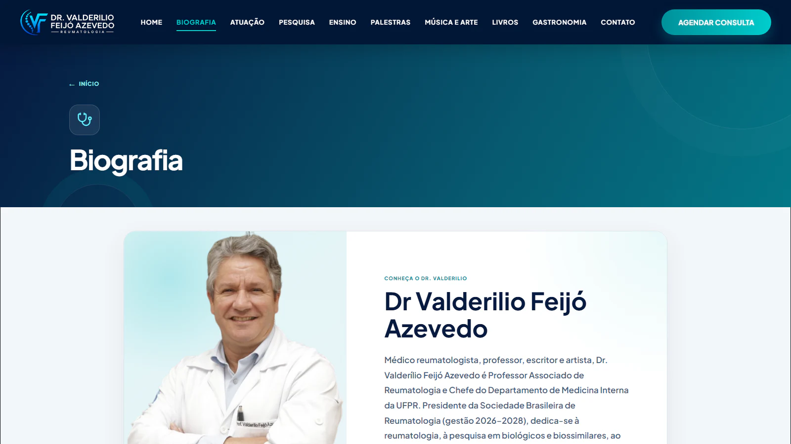
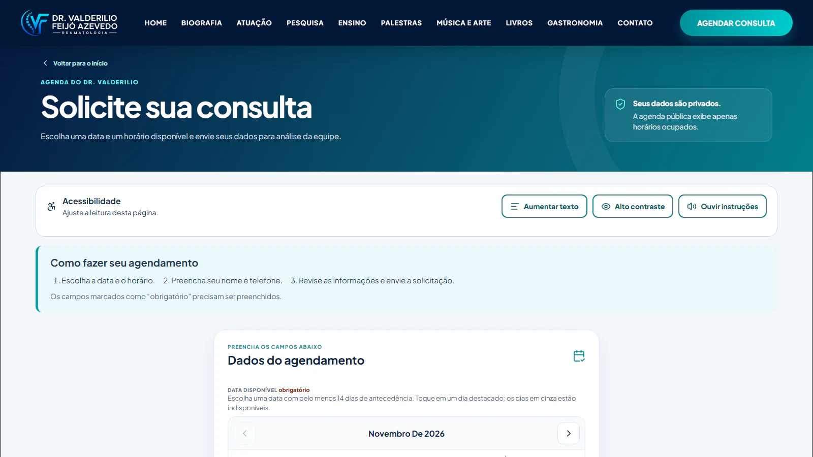

Case 02 · Site profissional
Dr. Valderilio Feijó Azevedo
Uma presença digital completa para reunir trajetória médica, produção científica, conteúdos autorais e atendimento.

Visão geral
Carreira, conteúdo e atendimento dentro do mesmo produto.
O site pessoal do Dr. Valderilio Feijó Azevedo organiza uma trajetória que passa por reumatologia, pesquisa, ensino, palestras, livros, música, arte e gastronomia. Cada frente tem espaço próprio sem perder a unidade da marca.
Experiência pública
A interface responsiva prioriza leitura, navegação direta e chamadas claras. O conteúdo pode evoluir por seções, mantendo biografia, atuação e projetos acessíveis em diferentes dispositivos.
Agendamento e gestão
O fluxo de consultas permite escolher datas e horários disponíveis, revisar dados e enviar uma solicitação. Recursos de acessibilidade e uma área de gestão apoiam o uso cotidiano da plataforma.
Interface
Conteúdo institucional com ferramentas para o dia a dia.
Exemplos da página inicial, da apresentação profissional e do fluxo público de agendamento.

